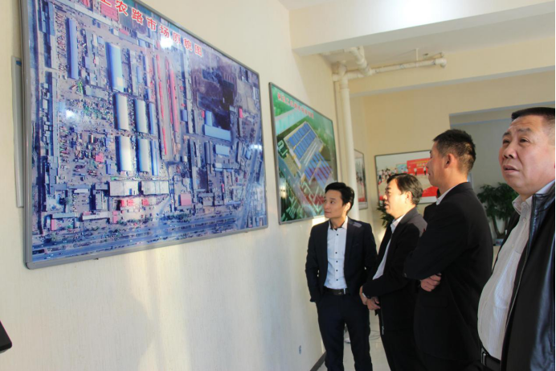

北京新发地总经理张月琳、办公室主任杨攀一行来保定联农果品批发市场考察
2017-11-02
10月29日，北京新发地农产品股份有限公司张月琳总经理、北京新发地农产品股份有限公司杨攀主任一行十余人来保定联农果品批发市场考察、交流。受保定市市场建设管理办公室谢占斌主任委托，张增强副主任、李严处长亲切接待张月琳总经理一行。保定联农果品批发市场有限公司副总经理刘立国、冯军平全程陪同参观考察。
张增强副主任向新发地张月琳总经理一行详细介绍了保定联农果品批发市场整体规划、项目进展和工程施工进度情况，并表示北京新发地保障着首都北京90%以上的农产品供应，是名副其实的“首都菜篮子”、“京城果盘子”。在京津冀协同发展的快速推动下，希望双方可以加强交流与合作，进一步促进保定农业的发展和市场的繁荣。

张月琳总经理表示，郑得厚总经理作为北京新发地“石榴大王”，为北京的农产品供应做出了很大的贡献，这次投资建设保定联农果品批发市场项目，不仅能够促进北京新发地与保定各区县林果产业与北京消费地的业务连接，推动保定地区林果产业的销售和种植，同时能够促进保定联农果品批发市场与国内各农产品主产区的对接，有效地保障保定市民的果盘子供应需求。
最后双方在保定联农果品批发市场交易大厅前进行了合影留念。